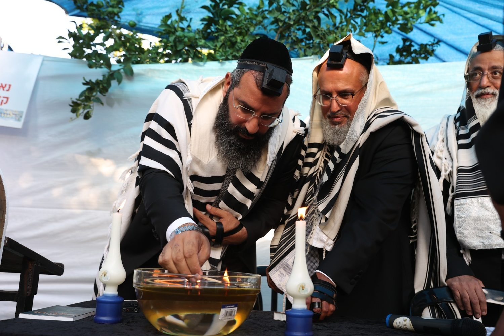
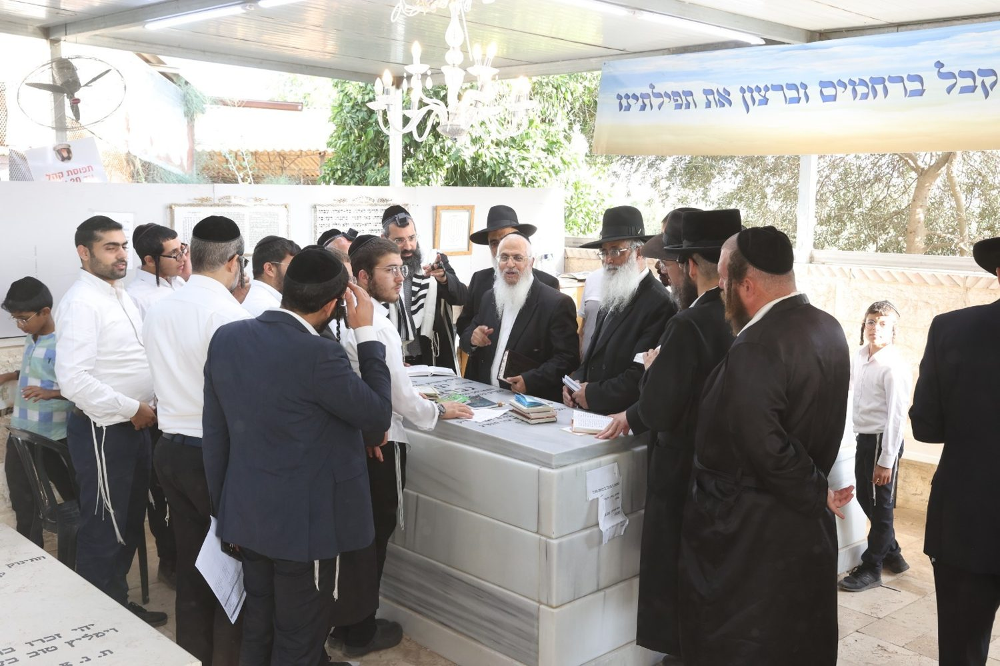
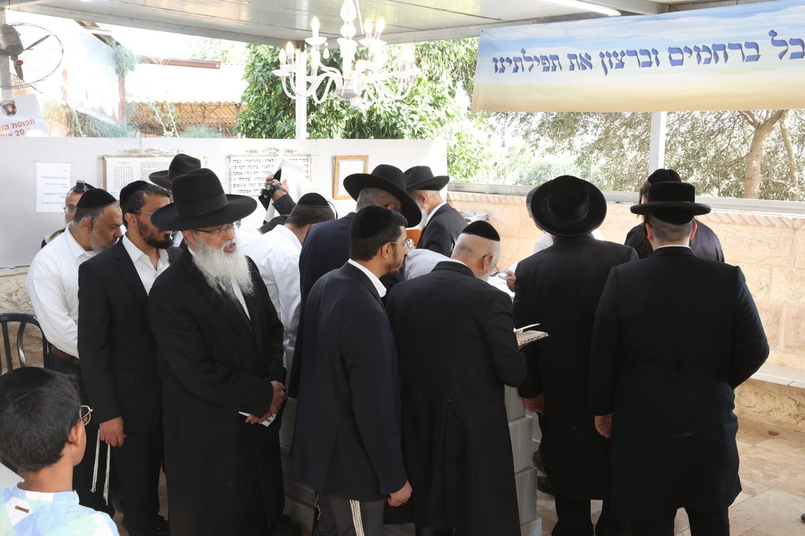
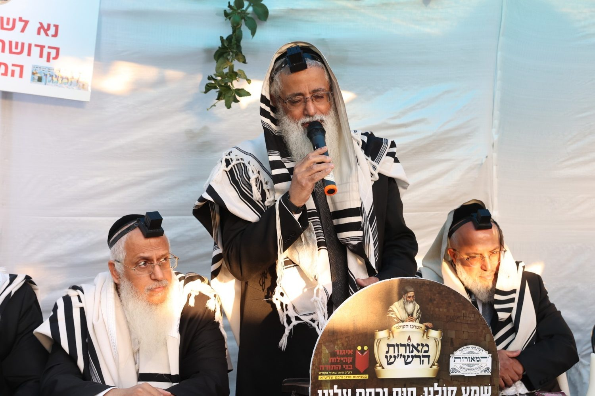

ההילולא לאורך השנים
גלריית ההילולא
מדי שנה, בכ״א בתמוז, נאספים אלפים מכל קצוות הארץ לציון פועל הישועות מעגור בעג׳ור. אלו רגעים מההילולא לאורך השנים.
 המוני בית ישראל · ליל ההילולא
המוני בית ישראל · ליל ההילולא
המקום הקדוש
הציון הקדוש
ציונו של הצדיק בחצר ביתו בכפר עג׳ור, ליד בית שמש.


העבודה שבלב
הדלקת נרות ותפילה
נרות לזכר הצדיק, תפילה והשתטחות על הציון.
 הדלקת נרות
הדלקת נרות
 תפילה בדמע
תפילה בדמע

השתטחות על הציון
נרות לזכרו
עולים לציון
דברי התעוררותקידוש שם שמים
המוני בית ישראל
אלפים מכל העדות והחוגים — כולם כאיש אחד בלב אחד.

בזכות התורמים
מעמד התפילה וההקדשה
בזכות התורמים מתקיימים הציון, ההילולא וההכנסת אורחים לכל הבאים.
📷 תמונות מארכיון ההילולות בעג׳ור לאורך השנים. יש לכם תמונות נוספות? שלחו אלינו.